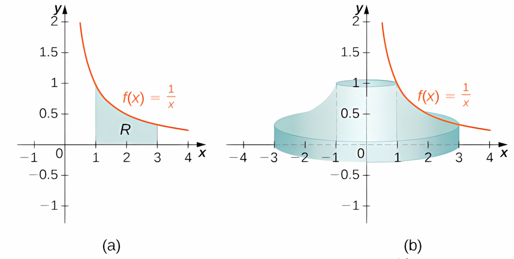
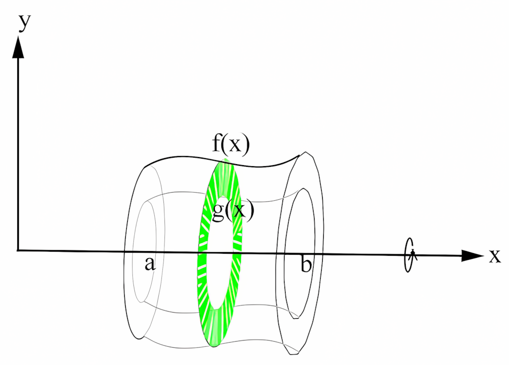
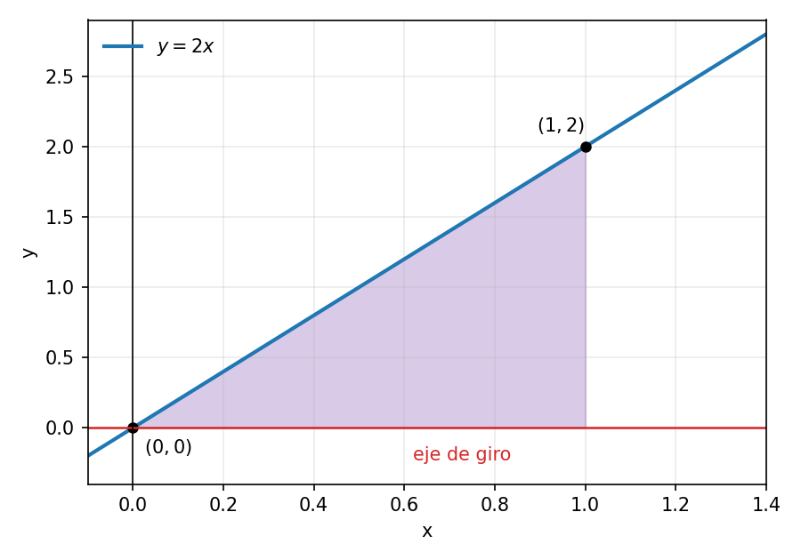
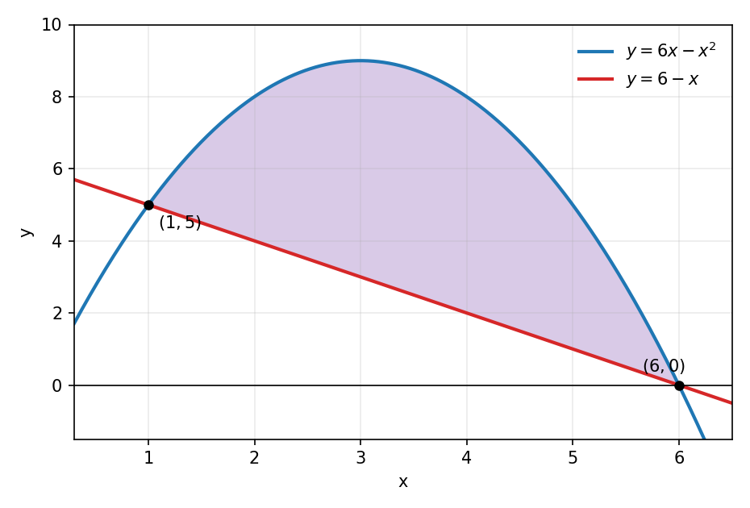
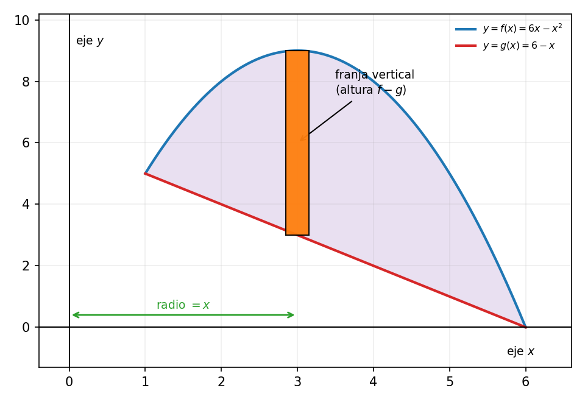
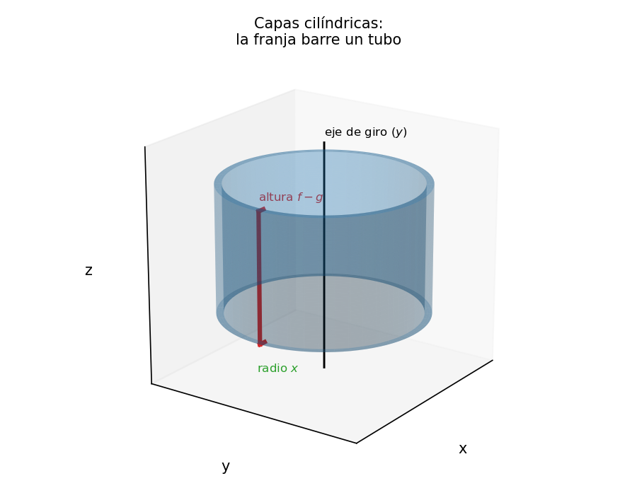
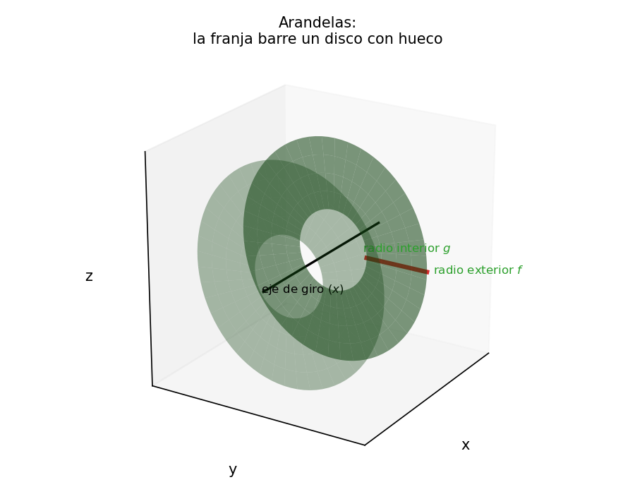
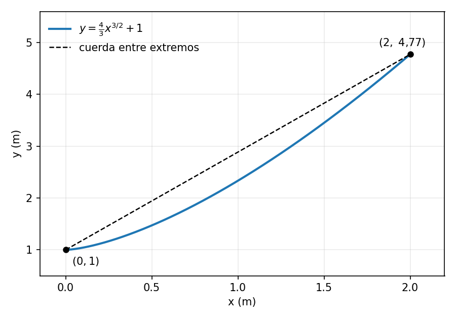
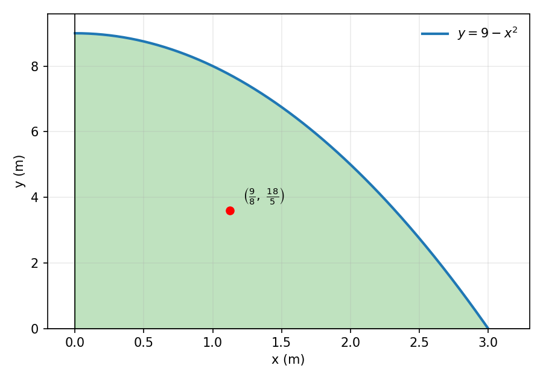
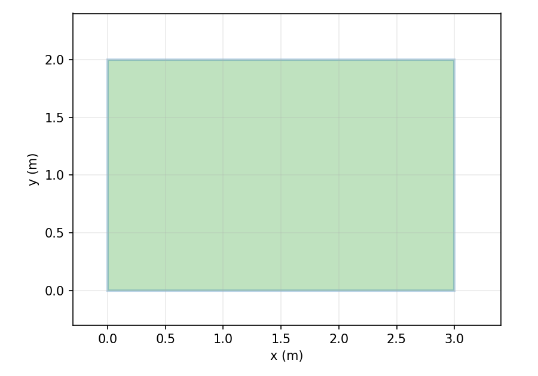

Al finalizar la clase, el estudiante será capaz de:
Cortamos la región en franjas verticales. Si está limitada por y=f(x) arriba y y=g(x) abajo, en [a,b], con f\ge g\ge 0, según el eje de giro:


La longitud de arco de y=f(x) entre a y b es L=\int_a^b\sqrt{1+(y')^2}\,dx.
Región bajo y=2x, entre x=0 y x=1, girada alrededor del eje x. En la figura, el radio exterior es y=2x y no hay radio interior.

Como giramos alrededor del eje x, usamos arandelas con radio f(x)=2x: V=\pi\int_0^1 (2x)^2\,dx.
Elevamos al cuadrado y sacamos la constante: V=\pi\int_0^1 4x^2\,dx=4\pi\int_0^1 x^2\,dx. Integramos con la regla de la potencia y evaluamos: 4\pi\left[\frac{x^3}{3}\right]_0^1=4\pi\left(\frac{1}{3}-0\right)=\frac{4\pi}{3}.
El volumen es \frac{4\pi}{3} unidades cúbicas.
La región está limitada por las curvas y=6x-x^2, \qquad y=6-x. Realice cada uno de los siguientes pasos:

En el Ejercicio 1 las curvas vienen como y=f(x), así que cortamos en franjas verticales. Con ese corte, el eje de giro decide el método:
Con franjas verticales, el giro en torno al eje y (parte b) usa capas y el giro en torno al eje x (parte c) usa arandelas.

Cortamos la región en franjas verticales. Cada franja está a distancia x del eje y y tiene altura f(x)-g(x).

Si giramos la franja alrededor del eje y, barre un tubo de radio x. Al sumar todos los tubos obtenemos las capas cilíndricas.

Si giramos la misma franja alrededor del eje x, barre un disco con hueco de radios f(x) y g(x). Al sumar todos los discos obtenemos las arandelas.
Igualamos las curvas: 6x-x^2=6-x \implies x^2-7x+6=0 \implies (x-1)(x-6)=0. Los límites son x=1 y x=6. Evaluando en x=3, 6(3)-3^2=9, \qquad 6-3=3, así que la parábola y=6x-x^2 queda arriba y la recta y=6-x queda abajo.
Usamos capas cilíndricas, con radio x y altura f(x)-g(x): V_y=2\pi\int_1^6 x\left[(6x-x^2)-(6-x)\right]dx=2\pi\int_1^6\left(-x^3+7x^2-6x\right)dx. Integramos: V_y=2\pi\left[-\frac{x^4}{4}+\frac{7x^3}{3}-3x^2\right]_1^6.
Evaluamos en los extremos: en x=6 la primitiva vale 72 y en x=1 vale -\dfrac{11}{12}. Por lo tanto, V_y=2\pi\left(72+\frac{11}{12}\right)=2\pi\cdot\frac{875}{12}=\frac{875\pi}{6}\approx 458{,}15. El volumen es \dfrac{875\pi}{6} unidades cúbicas.
Usamos arandelas, con radio exterior f(x)=6x-x^2 y radio interior g(x)=6-x: V_x=\pi\int_1^6\left[(6x-x^2)^2-(6-x)^2\right]dx. Desarrollando, (6x-x^2)^2=x^4-12x^3+36x^2, \qquad (6-x)^2=x^2-12x+36, (6x-x^2)^2-(6-x)^2=x^4-12x^3+35x^2+12x-36.
Integramos: V_x=\pi\left[\frac{x^5}{5}-3x^4+\frac{35x^3}{3}+6x^2-36x\right]_1^6. Evaluando, en x=6 la primitiva vale \dfrac{936}{5} y en x=1 vale -\dfrac{317}{15}, así que V_x=\pi\left(\frac{936}{5}+\frac{317}{15}\right)=\frac{625\pi}{3}\approx 654{,}50. El volumen es \dfrac{625\pi}{3} unidades cúbicas.
Un cable sigue la curva y=\frac{4}{3}x^{3/2}+1 desde x=0 hasta x=2, con las coordenadas en metros. Determine la longitud del cable, sin considerar holgura.
Realice cada uno de los siguientes pasos:

y'=\frac{4}{3}\cdot\frac{3}{2}x^{1/2}=2\sqrt{x}. Entonces (y')^2=4x \implies 1+(y')^2=1+4x.
La longitud es L=\int_0^2\sqrt{1+4x}\,dx. Con u=1+4x tenemos du=4\,dx, y los límites cambian así: x=0 \implies u=1, \qquad x=2 \implies u=9. Por lo tanto, L=\frac{1}{4}\int_1^9 u^{1/2}\,du=\frac{1}{4}\cdot\frac{2}{3}\left[u^{3/2}\right]_1^9.
Evaluando, L=\frac{1}{6}\left(9^{3/2}-1\right)=\frac{1}{6}(27-1)=\frac{26}{6}=\frac{13}{3}. La longitud del cable es \dfrac{13}{3} metros.
Para una placa bajo y=f(x), sobre y=0, con densidad constante \rho: m=\rho\int_a^b f(x)\,dx, \qquad M_y=\rho\int_a^b x f(x)\,dx, \qquad M_x=\frac{\rho}{2}\int_a^b f(x)^2\,dx. El centro de masas es \bar{x}=\frac{M_y}{m}, \qquad \bar{y}=\frac{M_x}{m}.
Una placa ocupa la región del primer cuadrante bajo y=9-x^2, limitada por los ejes. Las coordenadas están en metros y la densidad es \rho=4 kg/m².
Realice cada uno de los siguientes pasos:

El punto rojo marca el centro de masas calculado más abajo.
La curva corta al eje x cuando 9-x^2=0, es decir, x=3 (tomamos la raíz positiva). Por lo tanto x\in[0,3] y m=\rho\int_0^3(9-x^2)\,dx=4\left[9x-\frac{x^3}{3}\right]_0^3=4(27-9)=72. La masa es 72 kg.
M_y=\rho\int_0^3 x(9-x^2)\,dx=4\left[\frac{9x^2}{2}-\frac{x^4}{4}\right]_0^3=4\left(\frac{81}{2}-\frac{81}{4}\right)=81. M_x=\frac{\rho}{2}\int_0^3(9-x^2)^2\,dx=2\int_0^3(81-18x^2+x^4)\,dx.
M_x=2\left[81x-6x^3+\frac{x^5}{5}\right]_0^3=2\left(243-162+\frac{243}{5}\right)=2\cdot\frac{648}{5}=\frac{1296}{5}.
\bar{x}=\frac{M_y}{m}=\frac{81}{72}=\frac{9}{8}=1{,}125, \qquad \bar{y}=\frac{M_x}{m}=\frac{1296/5}{72}=\frac{18}{5}=3{,}6. El centro de masas es \left(\dfrac{9}{8},\dfrac{18}{5}\right) metros.
Si la densidad se duplica, tanto la masa como los dos momentos se multiplican por el mismo factor 2. Por lo tanto los cocientes no cambian: \bar{x}=\frac{2M_y}{2m}=\frac{M_y}{m}, \qquad \bar{y}=\frac{2M_x}{2m}=\frac{M_x}{m}. El centro de masas no se mueve.
Una placa rectangular ocupa 0\le x\le 3 y 0\le y\le 2, con densidad \rho=5 kg/m². Obtenga su masa y su centro de masas usando integrales, y verifique el resultado por simetría.

Como f(x)=2 en [0,3], m=\rho\int_0^3 2\,dx=5\cdot 6=30, M_y=\rho\int_0^3 x\cdot 2\,dx=5\left[x^2\right]_0^3=45, M_x=\frac{\rho}{2}\int_0^3 2^2\,dx=\frac{5}{2}(4\cdot 3)=30.
\bar{x}=\frac{45}{30}=\frac{3}{2}, \qquad \bar{y}=\frac{30}{30}=1. El centro de masas es \left(\dfrac{3}{2},1\right) metros, que coincide con el centro geométrico del rectángulo.